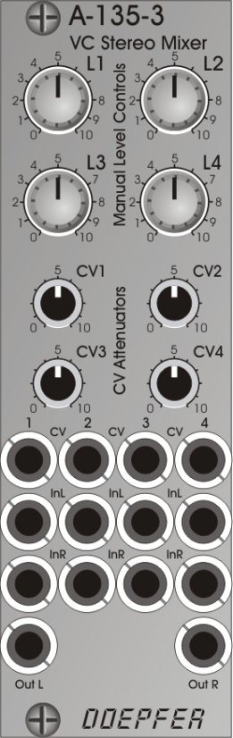
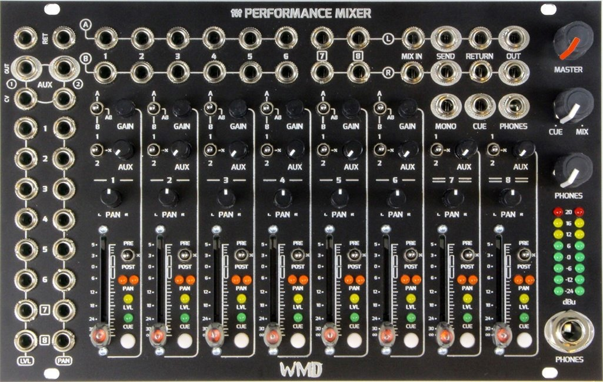

Eurorack Stereo Mixer Module Comparison
Martin Doudoroff
This is a pretty exhaustive and up-to-date basic comparison of all your stereo mixer module options for Eurorack, with an implicit focus on your output stage, although some of these modules are suitable for submixing. Some additional tools of potential interest are listed at the bottom. Related discussion thread: stereo mixer module comparison (ModWiggler forum)
Latest
2022-06-17 added added ADDAC713
2022-06-17 added Modbap Transit; misc updates
2021-12-01 added EMW 8-channel and updated Frap CGM
2021-08-19 added Toppobrillo MiniMix
2021-07-10 added Happy Nerding 4x Stereo Mixer
2021-06-05 added Modulaire Maritime Victor Alpha 2 & Feedback Mix BX
2020-03-20 added Blood Cells Audio D.O.Mixx
2020-01-11 small updates
2020-11-24 added Frap Tools QSC
2020-11-09 added SSF Vortices
2020-10-30 added Endorphin.es Cockpit 2
2020-08-02 added Make Noise XOH
2020-08-01 added Ladik M-610
2020-07-03 added Cosmotronic Cosmix
2020-06-04 added 6IXMXM.SET and ST-Modular SUM CHANNEL + MAIN
2020-06-01 minor updates
2020-05-18 added ACL Pan Mix
2020-02-17 added Doepfer A-135-3
2020-02-17 added SynEssentials SE2026
2020-02-16 added Modulaire Maritime Victor Alpha
2019-11-20 added Arcaico Caronte MS-4
2019-11-04 added Catoff Mix
2019-11-03 added Paratek РИТМИКС
2019-09-26 added Alyseum Q-Mix
2019-09-26 added L-1 Discrete VC Stereo Mixer, other updates
2019-09-26 removed Cwejman MX-4AS and Escalation Dominance
2019-09-26 added Toppobrillo Stereomix 2
2019-09-22 added Happy Nerding 2xSAM
2019-08-06 added ph Mixer++
2019-06-28 added new column about individual outs (for multitracking), other updates
2019-05-08 added OIII Quad Mixer
2019-04-30 added Make Noise X-Pan and the AGO Summingfacility; varoius other updates
2019-03-27 added Befaco STMIX
2019-02-10 added JPSynth Stereo Mixer
2019-01-20 added Tesseract Tex Mix
2018-11-16 added Takaab Nearness and stubbed out Worng Sound Stage
2018-10-14 added ST-Modular SUM
2018-09-07 Added SSI M-4 and Happy Nerding 3X
2018-05-02 Added Happy Nerding PanMix Jr.
2018-05-01 Added Roland 531, updates
2018-03-15 Added Hyrlo, minor updates
2018-02-07 Stubbed out 4ms Listen modules
2017-12-21 Added Intellijel Mixup
2017-11-13 Stubbed out Random*Source Stereo Mixer
2017-08-14 Doepfer shipping update
2017-07-04 Stubbed out the Befaco HEXA
2017-06-29 XAOC Praga shipping update
2017-06-05 Rebel Technologies Mix 02, Eric Stereo Mixer V2
2017-06-01 ADDAC Stereo Summing Mixer
2017-05-02 GRP Stereo Out Module
2017-04-13 Doepfer A-138s
2017-04-06 Qu-bit Mixology update
2017-02-21 L-1 2 Channel Mixer & Unity Stereo Mixer
2017-02-01 Rebel Technologies Mix 01
2017-01-31 Cwejman MX-4AS
2017-01-30 Doepfer A-135
2017-01-19 Qu-bit Mixology update
2017-01-17 Pittsburgh Lifeforms System Interface
2016-09-19 Ladik M-175 (and related)
2016-09-15 WMD & Erica updates
2016-08-21 Toppobrillo & Frap Tools update
2016-07-06 Topporillo update
2016-07-05 Endorphin.es Cockpit
2016-06-29 Blue Lantern Stereo Sir Mix Alot + new related modules
2016-06-01 Additonal PanMix details
2016-05-19 Added Happy Nerding PanMix & Hinton references
2016-05-18 Added Arrel ER-100
2016-03-24 Added initial info on Doepfer A-138p/o
2016-03-23 Added initial info on Frap CGM
2016-03-15 Added headphone column; updated data on Koma mixer
2016-02-01 Updated WMD photo
2016-01-27 Updated Toppobrillo info, new photos
2016-01-26 More additions and corrections
2016-01-25 Added more placeholder photos, missing modules, errata
2016-01-24 Errata and many additions from Mod Wiggler members
2016-01-23 Rough draft
Show full revision history
| Product | Shipping | Mono Inputs | Stereo Inputs | Channel Density/HP | CV Panning | CV VCAs | Mute/Solo | Sends | Individual Outs | Headphone Out | Approx. Price (USD) | Additional Notes | |
|---|---|---|---|---|---|---|---|---|---|---|---|---|---|
| 4ms Listen 4 2018 10 HP Modular Grid > Web site > |
Yes | 2-4 | 2-4 | 40% | 0 | 0 | 0 | 0 | – | Yes | $190.00 |
|
|
| 4ms Listen 4 1/4 2018 12 HP Modular Grid > Web site > |
Yes | 4 | 0 | 33% | 0 | 0 | 0 | 0 | – | Yes | $210.00 |
|
|
| 6IXMIXM.SET 2020 10 HP Modular Grid > Web site > |
Yes | 6 | 0 | 60% | 0 | 0 | 0 | – | No | $100.00 |
|
||
| ACL PAN MIX 2020 12 HP Modular Grid > |
Yes | 4 | 1 aux | 33% | 0 | 0 | 0 | 0 | – | No | $250.00 | ||
| ADDAC 713 2022 8 HP Modular Grid > Web site > |
Yes | 1-4 | 0-3 | 50% | 0 | 0 | 0 | 0 | – | No | $260.00 |
|
|
| ADDAC Stereo Summing Mixer 2017 80 HP Modular Grid > Web site > |
 |
Yes | 1-5+ | 1-5+ | 6% | 5 | 5 | 5 (manual) | 3 stereo sends | pre- or post-fader (switched per channel) | Yes | $1350.00 |
|
| Alyseum Q-Mix 2019 6 HP Modular Grid > Web site > |
Yes | 4 | 0 | 67% | 0 | 0 | 0 | 0 | – | No | $120.00 |
|
|
| Arcaico Caronte MS-4 2019 12 HP Modular Grid > Web site > |
Yes | 2-4 | 0-2 | 33% | 0 | 0 | 4 (manual) | 0 | – | No | $200.00 |
|
|
| Arrel Audio ER-100 Eurorack Stereo Summing Mixer 2018 28 HP Modular Grid > Web site > |
Yes | 8 | 1 stereo aux, 1 stereo insert | 29% | 0 | 0 | 8 solo (manual) | 1 stereo send | – | Yes | $1000.00 | ||
| Audio Gear Obsession SUMMINGFACILITY 2019 38 HP Modular Grid > Web site > |
Yes | 6 | aux returns can act as a stereo input | 16% | 0 | 0 | 6 mutes (manual), 6 send mutes (manual) | 2 | – | No | $1000.00 |
|
|
| Befaco HEXA 2017 70 HP Modular Grid > Web site > |
Yes | 6 | 3 stereo returns | 9% | 0 | 6 | 6 (manual) | 3 mono sends | post-EQ/fader | Yes | $1200.00 |
|
|
| Befaco STMIX 2019 6 HP Modular Grid > Web site > |
 |
Yes | 0-5 | 0-5 | 83% | 0 | 0 | 0 | – | No | $150.00 |
|
|
| Blacet MIX3500 ???? 15 HP Web site > |
 |
Yes (DIY) | 1-5 | 0-2 | 33% | 0 | 0 | 0 | 0 | – | Yes (sort of) | $140.00 | |
| Blood Cells Audio D.O.MIXX 2020 22 HP Modular Grid > Web site > |
Yes | 5 | 1 stereo return | 23% | 0 | 0 | 5 (manual) | 1 mono send | post-fader, post-mute | No | $220.00 |
|
|
| Blue Lantern BMX 6 Channel Stereo Mixer 2015 34 HP Modular Grid > |
 |
Yes (DIY or pre-built) | 6 | 0 | 18% | 0 | 0 | 6 (manual) | 2 | – | Yes | $45.00 |
|
| Blue Lantern Stereo Sir Mix Alot 2020 24 HP Modular Grid > |
Yes (DIY or pre-built) | 6 | 2 | 33% | 0 | 0 | 6 (manual) | 2 | – | No | $225.00 | ||
| Catoff Mix 2019 24 HP Modular Grid > Web site > |
Yes | 4 | 2 stereo returns | 25% | 0 | 0 | 4 (manual) | 2 | No | Yes | $300.00 |
|
|
| Circuit Abbey Unify 2012 12 HP Modular Grid > Web site > |
Yes | 4 | 0 | 33% | 0 | 0 | 0 | 0 | – | Yes | $250.00 |
|
|
| Cosmotronic Cosmix 2020 16 HP Modular Grid > Web site > |
Yes | 4 | 2 | 38% | 0 | 0 | 6 (manual) | 1 | No | No | TBD |
|
|
| Cwejman MX-4S 2012 20 HP Modular Grid > Web site > |
Yes | 4 | 0 | 20% | 4 | 4 | 0 | 0 | – | No | $900.00 |
|
|
| Doepfer A-135-3 2020 8 HP Modular Grid > |
 | Yes | 0 | 4 | 50% | 0 | 4 | 0 | – | No | $349.00 | ||
| Doepfer A-135-4A/B/A-138o 2017 30 HP Modular Grid > Web site > |
Yes | 4 | 0 | 13% | 4 | 4 | 4 (cv) | 4 | – | No | $440.00 |
|
|
| Doepfer A-138p/o 2016 20 HP Web site > |
Yes | 4 | 0 | 20% | 0 | 0 | 4 (manual) | 1 | – | No | $150.00 |
|
|
| Doepfer A-138s 2017 8 HP Modular Grid > Web site > |
Yes | 4 | 0 | 50% | 0 | 0 | 0 | 0 | – | No | $90.00 | ||
| EMW Stereo Mixer 2013 14 HP Modular Grid > Web site > |
 |
Yes | 4 | 0-2 | 29% | 0 | 0 | 0 | 0 | – | Yes (sort of) | $85.00 | |
| EMW 8-channel Stereo Mixer 2021 16 HP Modular Grid > Web site > |
 |
Yes | 0 | 8 | 50% | 0 | 0 | 0 | 0 | – | No | 120 | |
| Endorphin.es Cockpit 2016 6 HP Modular Grid > Web site > |
Discontinued | 0 | 4 | 67% | 0 | 0 | 4 mutes | 0-2 | – | Yes | $260.00 |
|
|
| Endorphin.es Cockpit 2 2020 6 HP Modular Grid > Web site > |
Yes | 0-4 | 0-4 | 67% | 0 | 0 | 4 (manual) | 0 | – | Yes (but not dedicated) | $200.00 |
|
|
| Erica Synths Black Output v2 2018 14 HP Modular Grid > Web site > |
Yes | 3 | 1 | 29% | 1 | 0 | 0 | 0 | – | Yes | $290.00 | ||
| Erica Synths Stereo Mixer v2 2017 10 HP Modular Grid > Web site > |
Yes | 1 | 3 | 40% | 1 | 0 | 0 | 0 | – | No | $145.00 |
|
|
| Feedback Mix BX 2021 35 HP Modular Grid > Web site > |
Yes | 6 | 2 stereo returns | 23% | 0 | 0 | 6 (manual) | 2 | – | Yes | $190.00 |
|
|
| Frap Tools CGM 2016 36 HP Modular Grid > Web site > |
 |
Yes | 3+ | 3+ | 8% | 3+ | 3+ | 3+ (manual) | 2+ | pre- or post-fader (switched per channel) | Yes | $1100.00 |
|
| Frap Tools QSC 2020 18 HP Modular Grid > Web site > |
Yes | 0-8 | 0-4 | 22% | 2 | 4 | 4 (manual) | 2 | – | No | $500.00 |
|
|
| GRP Stereo Out Module 2017 16 HP Modular Grid > Web site > |
Yes | 3-4 | 0-1 | 25% | 0 | 0 | 0 | 0 | – | Yes | $350.00 | ||
| Happy Nerding Panmix 2016 16 HP Modular Grid > Web site > |
 |
Yes | 4-6 (switches on back) | 0-2 (switches on back) | 38% | 0-6 | 0-6 | 0 | 0 | – | Yes (sort of) | $300.00 |
|
| Happy Nerding Panmix Jr. 2018 6 HP Modular Grid > Web site > |
Yes | 3 | 0 | 50% | 0 | 0 | 0 | 0 | – | No | $100.00 |
|
|
| Happy Nerding 2xSAM 2019 4 HP Modular Grid > Web site > |
Yes | 0 | 2 | 50% | 0 | 0 | 0 | 0* | 2 post-fader | No | $90.00 |
|
|
| Happy Nerding 3X Stereo Mixer 2018 6 HP Modular Grid > Web site > |
Yes | 1-3 | 1-3 | 50% | 0 | 0 | 2 (manual) | 0 | – | Yes (sort of) | $100.00 |
|
|
| Happy Nerding 4X Stereo Mixer 2021 4 HP Modular Grid > Web site > |
Yes | 1-4 | 1-4 | 100% | 0 | 0 | 0 | – | No | 130 |
|
||
| Intellijel Dubmix 2018 28 HP Modular Grid > Web site > |
 |
Discontinued | 4 | 1 stereo aux input (2 more with expander) | 14% | 4 | 4 (but requires expander for use) | 4 (manual) | 1 mono send, 1 stereo return; additional sends with expander | – | No | $600.00 |
|
| Intellijel Mixup 2017 6 HP Modular Grid > Web site > |
Yes | 2-4 | 0-2 | 67% | 0 | 0 | 3 (manual mutes) | 0 | – | No | $90.00 |
|
|
| JPSynth Stereo Mixer 2018 8 HP Modular Grid > Web site > |
Yes | 0-4 | 0-4 | 50% | 0 | 0 | 0 | 0 | – | No | $115.00 |
|
|
| Knob Farm Hyrlo 2018 4 HP Modular Grid > Web site > |
Yes | 0-6 | 0-3 | 75% | 0 | 0 | 0 | 0 | – | No | $90.00 | ||
| Koma Elektronik Poltergeist 2013 28 HP Modular Grid > Web site > |
Discontinued | 4 | 1 aux in | 14% | 4 | 4, plus master | 4 (manual) | 0 | – | No | $800.00 |
|
|
| L-1 Discreet VC Stereo Mixer 2019 22 HP Modular Grid > |
Yes (DIY or pre-built) | 0 | 4 | 18% | 4 | 4 | 0 | 0 | – | No | $600.00 |
|
|
| L-1 VC Stereo Mixer 2013 22 HP Modular Grid > Web site > |
 |
Yes (DIY or pre-built) | 4 | 0 | 18% | 4 | 4 | 0 | 0 | – | Yes (sort of) | $155.00 |
|
| L-1 Two Channel Voltage Controlled Stereo Mixer. 2016 14 HP Modular Grid > Web site > |
Yes (DIY or pre-built) | 1-2 | 1-2 | 14% | 2 | 4 | 0 | 2 stereo sends; no returns | – | 0 | $115.00 |
|
|
| L-1 Unity gain Stereo Mixer 2016 12 HP Modular Grid > Web site > |
Yes (DIY or pre-built) | 0 | 10 | 83% | 0 | 0 | 0 | 0 | – | 0 | $70.00 |
|
|
| Ladik M-175 (and M-171, M-172, M-173, and M-174) 2016 12 HP Modular Grid > Web site > |
Yes | 2-6 | 1-4 | 50% | 0 | 0 | 0 | 0 | – | 0 | $100.00 |
|
|
| Ladik M-610 2020 20 HP Modular Grid > Web site > |
Yes | 1-6 | 1-6 | 30% | 0 | 0 | 0 | 0 | – | No | $100.00 |
|
|
| Make Noise X-Pan 2019 10 HP Modular Grid > Web site > |
Yes | 2-3 | 0-1 | 30% | 2 | 1-3 | 0 | 0 | – | No | $260.00 |
|
|
| Make Noise XOH 2019 6 HP Modular Grid > Web site > |
Yes | 0-2 | 0-2 | 33% | 0 | 0 | 0 | 0 | – | Yes | $110.00 | ||
| Modbap Modular Transit 2022 6 HP Modular Grid > Web site > |
Yes | 0-2 | 0-2 | 33% | (see notes) | 2 (manual) | – | Yes | 250 |
|
|||
| Modulaire Maritime Victor Alpha 2020 8 HP Modular Grid > Web site > |
Yes | 4 | 0 | 50% | 0 | 0 | 0 | 0 | – | No | $165.00 |
|
|
| Modulaire Maritime Victor Alpha 2 2021 8 HP Modular Grid > Web site > |
Yes | 4 | 0 | 50% | 0 | 0 | 0 | 0 | – | Yes | $200.00 |
|
|
| OIIIAUDIO Quad Mixer 2019 24 HP Modular Grid > Web site > |
Yes | 4 | 0 | 17% | 4 | 0 | 0 | 0 | – | Yes | $350.00 | ||
| Paratek РИТМИКС 2019 12 HP Modular Grid > |
Yes | 8 | 0 | 67% | 0 | 0 | 0 | 0 | – | No | $200.00 |
|
|
| ph Mixer++ 2019 12 HP Modular Grid > Web site > |
Yes | 3-4 | 0-1 | 33% | 0 | 0 | 4 (manual) | 1 mono send | – | No | $165.00 |
|
|
| Pittsburgh Lifeforms System Interface 2017 24 HP Modular Grid > Web site > |
Yes | 6 | 1 stereo AUX return | 25% | 0 | 0 | 0 | 1 mono send | – | Yes | $250.00 |
|
|
| ProModular MIIIIX 2014 18 HP Modular Grid > Web site > |
 |
Discontinued | 4 | 0 | 22% | 4 | 4 | 4 (manual) | Expander | post-fader | Yes (sort of) | $600.00 |
|
| Qu-Bit Mixology 2017 28 HP Modular Grid > Web site > |
Yes | 4 | 1 stereo AUX return | 14% | 4 | 4 | 4/4 (manual) | 1 | – | No | $400.00 |
|
|
| Random*Source Stereo Mixer 2017 18 HP Modular Grid > Web site > |
Yes | 2 | 0 | 11% | 2 | 2 | 0 | 0 | – | No | $250.00 |
|
|
| Rebel Technology Mix 01 2017 10 HP Modular Grid > Web site > |
Yes | 4 | 0 | 40% | 0 | 0 | 0 | 0 | – | Yes (sort of) | $115.00 |
|
|
| Rebel Technology Mix 02 2017 10 HP Modular Grid > Web site > |
Yes | 4 | 0 | 40% | 0 | 0 | 0 | 0 | – | Yes (sort of) | $150.00 |
|
|
| Roland SYSTEM-500 531 MIX 2018 20 HP Modular Grid > Web site > |
 |
Yes | 4-6 | 0-1 | 30% | 6 | 0 | 6 (manual) | 0 | – | Yes | $400.00 |
|
| Sputnik 6-Channel Stereo Mixer 2014 20 HP Modular Grid > Web site > |
 |
Yes | 6 | 0 | 30% | 2 | 0 | 4 (manual) | 0 | – | Yes | $250.00 |
|
| ST-Modular SUM 2018 26 HP Modular Grid > Web site > |
Yes (DIY) | 5 | 1 stereo input, 1 stereo aux return | 27% | 0 | 0 | 5 | 1 | – | Yes | TBD |
|
|
| ST-Modular SUM CHANNEL + MAIN 2020 34 HP Modular Grid > Web site > |
Yes (DIY) | 1+ | 1+ | 12% | 0 | 0 | manual | 2 | – | Yes | TBD |
|
|
| Strange Science Instruments M-4 Advanced Stereo Mixer 2018 28 HP Modular Grid > Web site > |
 |
Yes | 4 | 0 | 14% | 4 | 4 | 0 | 0 | – | No | $700.00 |
|
| Steady State Fate Vortices 2020 18 HP Modular Grid > Web site > |
Yes | 4 (plus 2 mono aux) | 3 (plus 1 stereo aux) | 39% | 2 + crossfader | 7 | 0 | 0 | – | No | $380.00 |
|
|
| Synthrotek MST Stereo Output Mixer 2015 6 HP Modular Grid > Web site > |
Yes | 2-4 | 0-2 | 67% | 0 | 0 | 0 | 0 | – | No | $85.00 |
|
|
| SynEssentials SE2026 2020 45 HP Modular Grid > Web site > |
 |
Yes | 6 | 2 stereo returns | 13% | 0 | 0 | 6 (manual) | 2 mono sends | – | Yes | $1500.00 |
|
| Takaab Nearness 2018 3 HP Modular Grid > Web site > |
 |
Yes | 7 | 0 | 133% | 0 | 0 | 0 | 0 | – | No | $50.00 |
|
| Tesseract Tex-Mix 2019 32 HP Modular Grid > |
Yes (DIY or pre-built) | 4-8 | 0-4 | 25% | 0 | 4 | 8 (manual) | 2 mono sends, 2 stereo returns | – | Yes | $250.00 |
|
|
| Toppobrillo Stereomix 2016 24 HP Modular Grid > Web site > |
 |
Discontinued | 4 | 1 stereo AUX return | 17% | 4 | 4 | 4 (manual) | 1 mono send, 1 stereo return | – | Yes | $550.00 |
|
| Toppobrillo Stereomix 2 2019 24 HP Modular Grid > |
 |
Discontinued | 4 | 1 stereo AUX return | 17% | 4 | 4 | 4 (manual) | 1 mono send, 1 stereo return | – | Yes | $480.00 |
|
| Toppobrillo MiniMix 2021 14 HP Modular Grid > |
Yes | 4-6 | 0-2 | 43% | 2 | 0 | 6 (manual) | 0 | – | Yes | TBD |
|
|
| Verbos Scan & Pan 2015 14 HP Modular Grid > Web site > |
 |
Yes | 4 | 0 | 29% | 4 | 4 | 0 | 0 | – | No | $400.00 |
|
| WMD Performance Mixer 2016 40 HP Modular Grid > Web site > |
 | Yes | 6 | 2 | 20% | 8 | 8 | 0 | 2 | post-gain, pre-fader (requires DB25 expander) | Yes | $750.00 |
|
| Worng Sound Stage 2018 12 HP Modular Grid > Web site > |
 |
Yes | 22 | 0 | 183% | 0 | 0 | 0 | 0 | – | No | $350.00 |
|
| XAOC Praga 2012 20 HP Modular Grid > Web site > |
 |
Yes | 4 | 2 stereo returns | 20% | 4 | 4 | 4 (manual, CV with expander) | 2 mono sends, 2 stereo returns | post-fader | No | $515.00 |
|
{kind=link}
{kind=link}
{kind=link}
{kind=link}
{kind=link}
{kind=link}
{kind=link}
{kind=link}
{kind=link}
{kind=link}
{kind=link}
{kind=link}
{kind=link}
{kind=link}
{kind=link}
{kind=link}
{kind=link}
{kind=link}
{kind=link}
{kind=link}
{kind=link}
{kind=link}
{kind=link}
{kind=link}
{kind=link}
{kind=link}
{kind=link}
{kind=link}
{kind=link}
{kind=link}
{kind=link}
{kind=link}
{kind=link}
{kind=link}
{kind=link}
{kind=link}
{kind=link}
{kind=link}
{kind=link}
{kind=link}
{kind=link}
{kind=link}
{kind=link}
{kind=link}
{kind=link}
{kind=link}
{kind=link}
{kind=link}
{kind=link}
{kind=link}
{kind=link}
{kind=link}
{kind=link}
{kind=link}
{kind=link}
{kind=link}
{kind=link}
{kind=link}
{kind=link}
In addition, these modules don’t really belong in the above comparison but have been pointed out as being of potential interest:
- Make Noise RxMx (can be employed in a stereo manner)
- IO Instruments Sponde (can be employed in a stereo manner)
- Intellijel Mutamix (can be employed in a stereo manner)
- Intellijel Azimuth II (single channel of mono to stereo with panning and spread, amongst other features)
- 4ms VCA Matrix (multi-channel mixing and routing vca that can be employed in a stereo manner)
- ADDAC 802 Quintet Mixing Console (multi-cahnnel mixing and routing vca that can be employed in a stereo manner)
- Low-Gain Submix (multi-channel mixing and routing vca that can be employed in a stereo manner)
- MFB Drum-99 (multi-channel stereo submixer)
- Hinton Instruments ModMix II (dual four input mixer with added sauce; also note other Hinton products relevant to stereo mixing)
- Worng LRMSMSLR Mid-Side (MS) Matrix (mid side stereo processor for Eurorack)
- Ladik M-160 (configurable mixer)
- Blue Lantern Stereoscopic Duo VCA
- Hikari Atten/Mixer
- omsonic Universal Panning Expander and Mixer
- Nearness (clever space-efficient DIY design)
- Qu-bit Synapse (can be employed in a stereo manner)
• • •